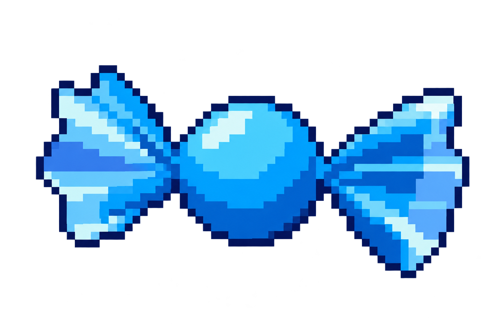
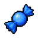

<!doctype html><html lang="zh-Hant"><meta charset="utf-8"><meta name="viewport" content="width=device-width,initial-scale=1"><title>糖果預覽</title><style>body{margin:24px;background:#192b43;color:#eef6ff;font:16px/1.7 system-ui}main{max-width:1000px;margin:auto}.grid{display:flex;flex-wrap:wrap;gap:20px}figure{margin:0;padding:20px;background:#2c455f;max-width:300px}img{max-width:100%;width:160px;height:auto;image-rendering:pixelated}a{color:#8cdbff}</style><main><h1>糖果預覽</h1><p>素材預覽；不會消耗道具、孵化或發放獎勵。</p><div class="grid"><figure><figcaption>新版藍色扭結糖果</figcaption></figure><figure><figcaption>既有 64×64 道具小圖</figcaption></figure></div><p><a href="README.md">規則與使用方式</a></p></main></html>